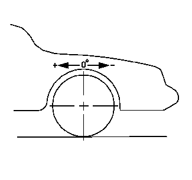

主销后倾角指从车辆侧面观察时，转向主销最高点前倾或后倾的角度。后倾为正 (+)，前倾为负 (-)。主销后倾角影响转向时的方向控制，但不影响轮胎磨损。主销后倾角受车辆高度影响，所以将车身保持在设计高度很重要。车辆过载或后弹簧疲软或松弛将影响主销后倾角。车辆后部低于设计的车身翘头高度时，前悬架朝使正主销后倾角加大的方向运动。车辆后部高于设计的车身翘头高度时，前悬架朝正主销后倾减小的方向运动。
正主销后倾角过小，高速时转向困难，且在转向结束后车轮回正性能下降。若某个车轮的正主销后倾角比其他车轮的大，则该车轮将向车辆中心偏斜。在此情况下，即使正主销后倾角极小，也会导致车辆跑偏。